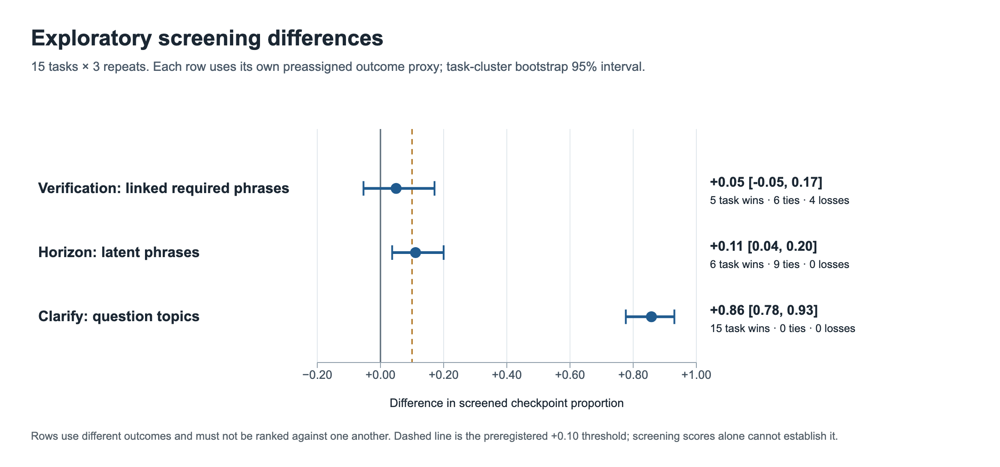
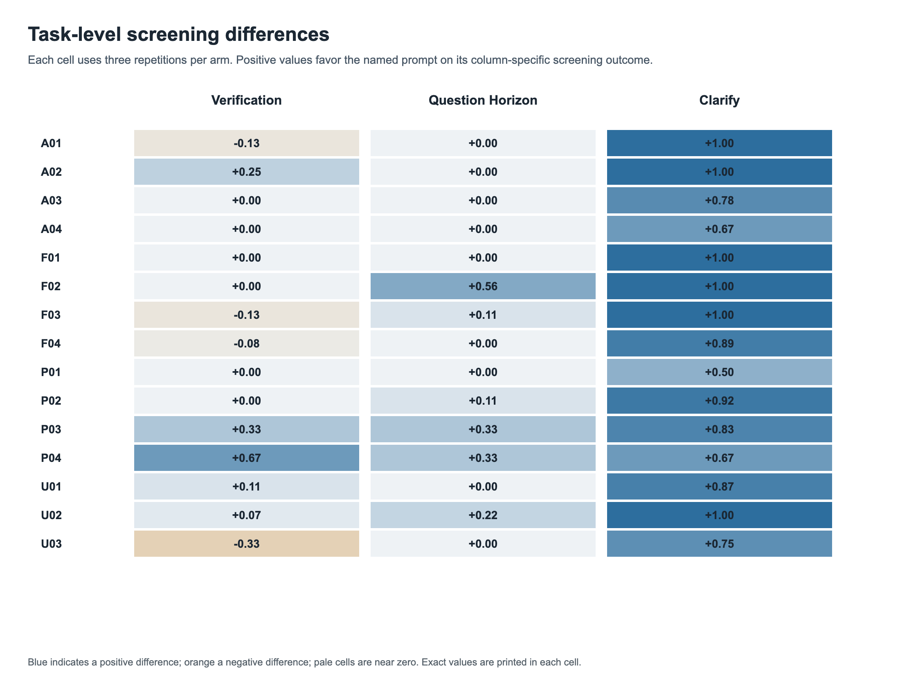
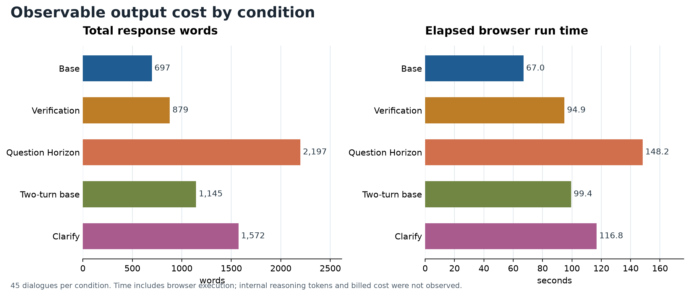

Protocol and results
Do the prompts actually help?
Fifteen web-research cases, five conditions, and three fresh runs per condition produced 225 completed dialogues. Local screening now shows where the prompts change behavior and where the evidence remains incomplete.
Exploratory analysis is available. Claim-level source support and material-error rates are not yet certified, so the frozen effectiveness rule cannot be applied as a final accuracy verdict.
Local analysis · 30 September 2026
What changed
Each contrast uses its matched control and averages three repeats within each of 15 tasks before calculating the difference.
Verification First
+0.050
Required-phrase coverage multiplied by direct official-URL presence; 95% task-bootstrap interval −0.054 to +0.171.
No robust improvement shown
Without the URL condition, required-phrase coverage changes by −0.017. Replies averaged 879 words versus 697 for base.
Question Horizon
+0.111
Latent-issue phrase coverage; 95% task-bootstrap interval +0.037 to +0.200.
Broader coverage at higher cost
Six task wins, nine ties. Mean output rose to 2,197 words and browser time to 148.2 seconds.
Clarify Then Investigate
+0.858
First-turn clarification-topic coverage versus a two-turn base; 95% task-bootstrap interval +0.777 to +0.930.
Changes first-turn behavior
Mean 10.18 questions. Final required-phrase coverage rose only +0.049, below the prespecified +0.10 threshold.
| Condition | Required phrases | Latent phrases | Final URL | Mean words | Mean seconds |
|---|---|---|---|---|---|
| Base | 0.968 | 0.830 | 41/45 | 697 | 67.0 |
| Verification First | 0.951 | 0.822 | 44/45 | 879 | 94.9 |
| Question Horizon | 0.977 | 0.941 | 44/45 | 2,197 | 148.2 |
| Two-turn base | 0.940 | 0.822 | 43/45 | 1,145 | 99.4 |
| Clarify Then Investigate | 0.988 | 0.874 | 44/45 | 1,572 | 116.8 |



Evidence limits
What the screen cannot prove
Rules search for characteristic wording in saved answers. A hit can mention a fact without explaining it correctly; a missed paraphrase can be a false negative. The focused 45-dialogue review revised 11 checkpoint marks in nine dialogues and was not fully blind to condition.
Of the 225 final exports, 216 contain a direct URL from a task-relevant official source family. Nine contain only native citation markers in the final reply. URL presence does not establish that a page supports a specific claim.
The same complete task details were supplied in the second user turn of both two-turn conditions; they did not answer every personalized clarification question. The experiment therefore isolates first-turn questioning and a matched final response, not the full benefit of a natural dialogue.
Interpretation: Question Horizon is promising for breadth in some tasks, Clarify reliably asks about the missing context, and Verification First shows no stable content gain in this screen. None has a confirmed accuracy advantage under the frozen rule.
Reproducibility
Inspect the protocol, data, and report
The separate pilot and the earlier partial API sample are excluded. Results are specific to GPT-5.6 Sol High, this case set, and the browser search workflow used on 29–30 September 2026.